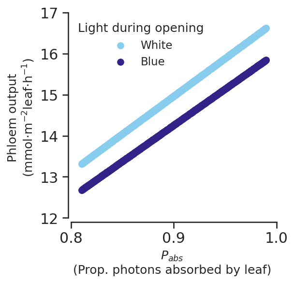
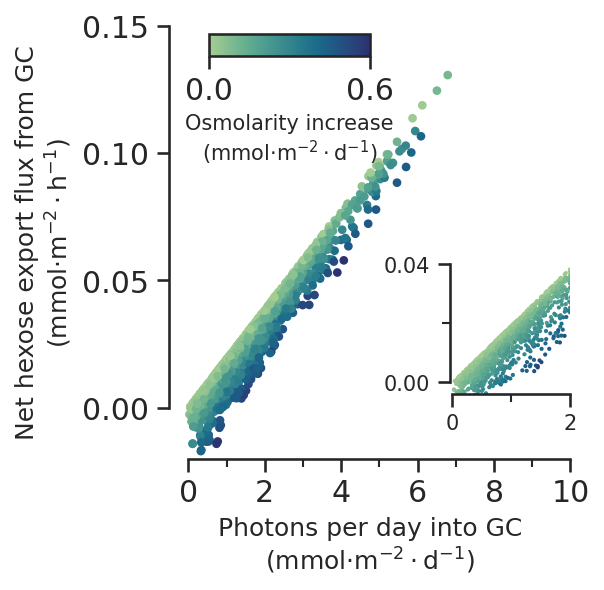
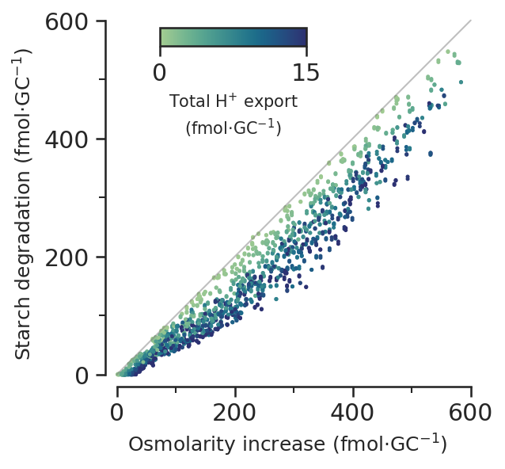
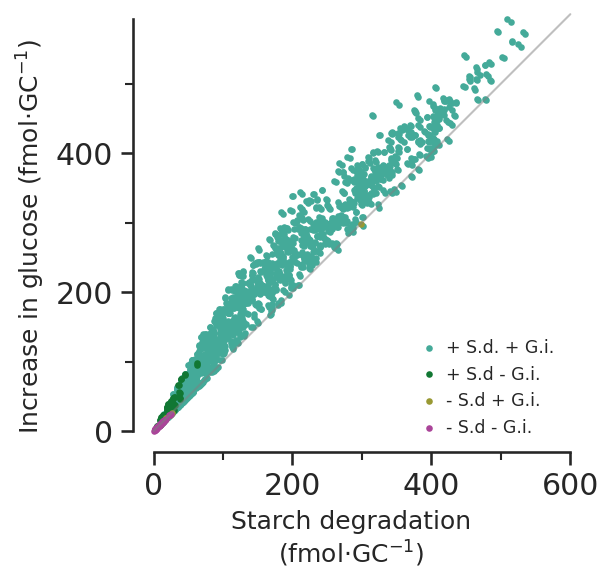
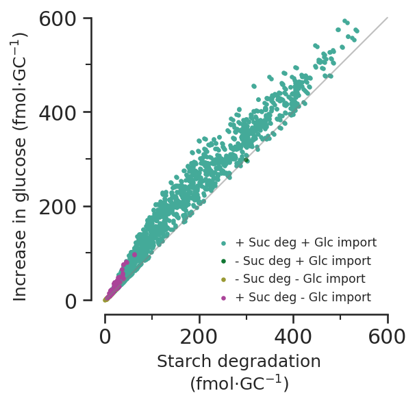
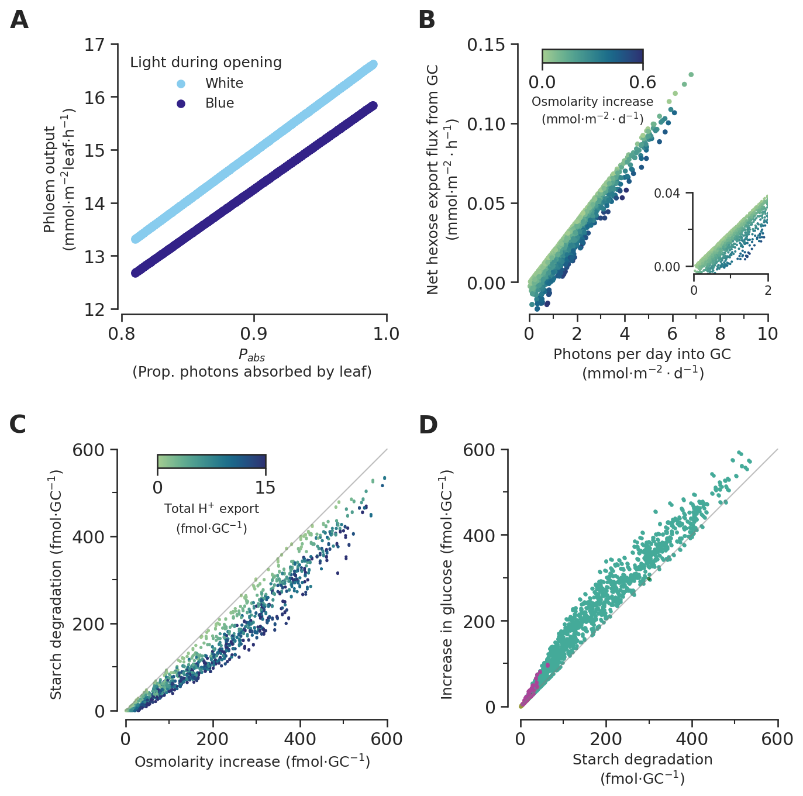
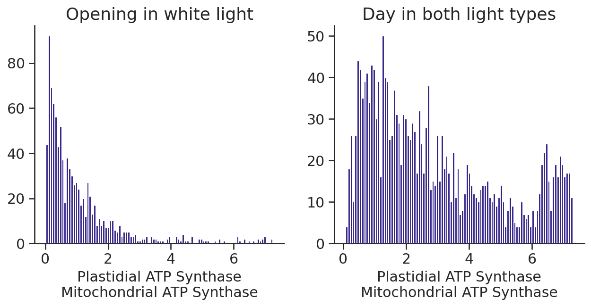
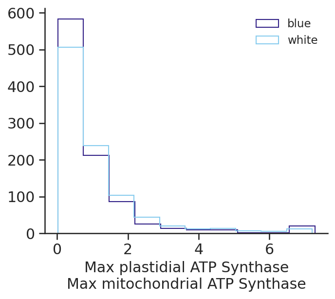
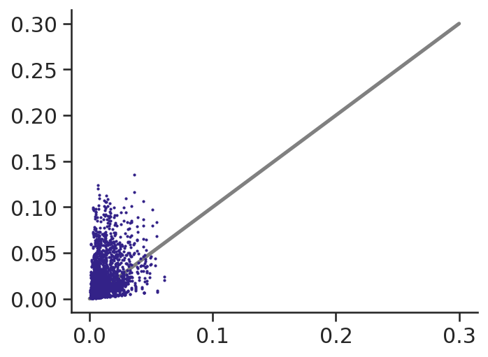
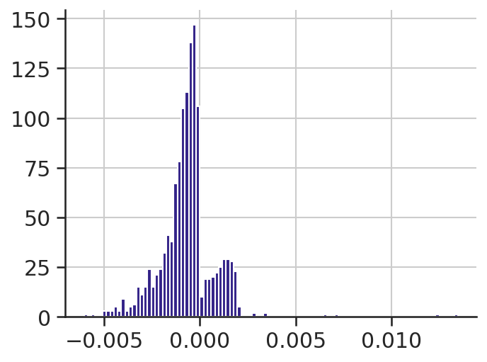

import cobra
import matplotlib.pyplot as plt
import numpy as np
import pandas as pd
import seaborn as sns
from matplotlib.cm import ScalarMappable
from matplotlib.colors import Normalize
from matplotlib.ticker import AutoMinorLocator, MultipleLocator
from mmon_gcm.analysing import get_phase_lengths
from mmon_gcm.supermodel import SuperModel
from sklearn.linear_model import LinearRegression
from sklearn.metrics import mean_squared_error, r2_score
from sklearn.preprocessing import OneHotEncoder, StandardScalerAnalysing the results of the constraint scan
sns.set_theme()
sns.set_style("ticks")
palettes = {
"tol_bright": sns.color_palette(
["#4477AA", "#66CCEE", "#228833", "#CCBB44", "#EE6677", "#AA3377", "#BBBBBB"]
),
"tol_muted": sns.color_palette(
[
"#332288",
"#88CCEE",
"#44AA99",
"#117733",
"#999933",
"#DDCC77",
"#CC6677",
"#882255",
"#AA4499",
]
),
}
sns.set_palette(palettes["tol_muted"])
colours = sns.color_palette()
params = {
"xtick.labelsize": "large",
"ytick.labelsize": "large",
"axes.labelsize": "large",
"axes.titlesize": "x-large",
"font.family": "sans-serif",
"axes.spines.right": False,
"axes.spines.top": False,
"legend.frameon": False,
"savefig.bbox": "tight",
"lines.linewidth": 2.5,
"figure.figsize": [5, 3.75],
"figure.dpi": 150,
}
plt.rcParams.update(params)def get_bounds_in_model(constraints):
super_model = SuperModel(constraints)
volumes = super_model.get_volumes(per_guard_cell=False)
closed_volume = volumes[0]
open_volume = volumes[1]
osmolarities = super_model.get_osmolarities()
closed_osmolarity = osmolarities[0]
open_osmolarity = osmolarities[1]
photons = super_model.get_photons(150)
gc_photons = photons[0]
gc_atpase_upper_bound = super_model.get_atpase_constraint_value(
constraints.loc["ATPase"]
)
return {
"V_closed": closed_volume,
"V_open": open_volume,
"Os_closed": closed_osmolarity,
"Os_open": open_osmolarity,
"Photons": gc_photons,
"ATPase": gc_atpase_upper_bound,
}Importing results and constraints
# import results files
blue_results = pd.read_csv(
"../outputs/constraint_scan/constraint_scan_results_blue.csv", index_col=0
)
white_results = pd.read_csv(
"../outputs/constraint_scan/constraint_scan_results_white.csv", index_col=0
)
scan_results = pd.concat([white_results, blue_results])
scan_results = scan_results.reset_index().drop("index", axis=1)
# remove solutions which were not feasible
infeasible_solutions = scan_results[scan_results.isna().any(axis=1)]
feasible_solutions = scan_results.dropna()
scan_results = feasible_solutionslen(infeasible_solutions)1len(feasible_solutions)1929scan_results.shape(1929, 7097)# convert any fluxes that are below 10^-6 to 0
scan_results = scan_results.mask(abs(scan_results) < 0.000001, other=0)# import constraints files
white_constraints = pd.read_csv(
"../outputs/constraint_scan/constraints_df.csv", index_col=0
)
white_constraints["light"] = "white"
blue_constraints = pd.read_csv(
"../outputs/constraint_scan/constraints_df.csv", index_col=0
)
blue_constraints["light"] = "blue"
scan_constraints = pd.concat([white_constraints, blue_constraints])
scan_constraints = scan_constraints.reset_index().drop("index", axis=1)
# remove infeasible constraints combinations
feasible_scan_constraints = scan_constraints.loc[feasible_solutions.index]
infeasible_scan_constraints = scan_constraints.loc[infeasible_solutions.index]
scan_constraints = feasible_scan_constraints
# Remove maintenance in scan_constraints
scan_constraints = scan_constraints.drop('Maintenance', axis=1)scan_constraints.columnsIndex(['P_abs', 'T_l', 'A_l', 'V_gc_ind', 'FqFm', 'R_ch', 'R_ch_vol', 'L_air',
'L_epidermis', 'Vac_frac', 'T', 'R', 'N_gcs', 'n', 'm', 'r', 's',
'C_apo', 'A_closed', 'A_open', 'ATPase', 'light'],
dtype='object')# import constraints that were used in previous paper solutions
default_constraints = pd.read_csv("../inputs/arabidopsis_parameters.csv", index_col=0)[
"Value"
]
paper_constraints = []
index = []
for light in ["white", "blue", "nops"]:
for constraint in ["unconstrained", "constrained"]:
constraints = default_constraints.copy()
if constraint == "unconstrained":
constraints["ATPase"] = 1000
elif constraint == "constrained":
constraints["ATPase"] = 7.48
constraints["light"] = light
index.append(f"{light}_{constraint}_wt")
paper_constraints.append(constraints)
paper_constraints = pd.DataFrame(paper_constraints, index=index)
paper_constraints = paper_constraints.iloc[1, :-1]
paper_constraintsP_abs 0.9
T_l 0.00017
A_l 1.0
V_gc_ind 0.0
FqFm 0.9
R_ch 0.069231
R_ch_vol 0.200476
L_air 0.37
L_epidermis 0.15
Vac_frac 0.751
T 296.15
R 0.08205
N_gcs 580000000.0
n 2.5
m 0.8
r 0.0
s 0.0
C_apo 0.02302
A_closed 1.6
A_open 2.75
ATPase 7.48
Name: white_constrained_wt, dtype: object# import results for previous simulations in paper
paper_solution_files = []
for light in ["white", "blue", "nops"]:
for constraint in ["unconstrained", "constrained"]:
paper_solution_files.append(f"{light}_{constraint}_wt.csv")
solution_dfs = [
pd.read_csv(f"../outputs/model_solutions/{file_name}", index_col=0)["fluxes"]
for file_name in paper_solution_files
]
paper_results = pd.concat(solution_dfs, axis=1).T
paper_results.index = index# get a reduced get of constraints that are more specific to the guard cell
scan_gc_constraints = pd.DataFrame.from_dict(
list(scan_constraints.apply(get_bounds_in_model, axis=1))
)
scan_gc_constraints["Os_dif"] = (
scan_gc_constraints["Os_open"] - scan_gc_constraints["Os_closed"]
)
scan_gc_constraints.index = scan_constraints.index
scan_gc_constraints.head()/home/maurice/Sync/GC/mmon-gcm/mmon_gcm/supermodel.py:23: UserWarning: No fba model added to the Supermodel, fine if that's what you want
warnings.warn("No fba model added to the Supermodel, fine if that's what you want")| V_closed | V_open | Os_closed | Os_open | Photons | ATPase | Os_dif | |
|---|---|---|---|---|---|---|---|
| 0 | 0.000085 | 0.000126 | 0.018035 | 0.041323 | 0.045613 | 0.002164 | 0.023288 |
| 1 | 0.000319 | 0.000671 | 0.077930 | 0.350492 | 0.418305 | 0.004629 | 0.272562 |
| 2 | 0.000203 | 0.000376 | 0.040124 | 0.126824 | 0.343557 | 0.000851 | 0.086700 |
| 3 | 0.000205 | 0.000290 | 0.033918 | 0.068658 | 0.096408 | 0.005861 | 0.034740 |
| 4 | 0.000247 | 0.000483 | 0.060282 | 0.272076 | 0.217660 | 0.006976 | 0.211795 |
paper_gc_constraints = pd.Series(get_bounds_in_model(paper_constraints))
paper_gc_constraints["Os_dif"] = (
paper_gc_constraints["Os_open"] - paper_gc_constraints["Os_closed"]
)
paper_gc_constraints/home/maurice/Sync/GC/mmon-gcm/mmon_gcm/supermodel.py:23: UserWarning: No fba model added to the Supermodel, fine if that's what you want
warnings.warn("No fba model added to the Supermodel, fine if that's what you want")V_closed 0.000220
V_open 0.000254
Os_closed 0.039359
Os_open 0.054922
Photons 0.018372
ATPase 0.004338
Os_dif 0.015563
dtype: float647a - What contributes to phloem output?
Set up features for linear regression by
Convert light using onehotencoder
scan_constraints[["light"]]| light | |
|---|---|
| 0 | white |
| 1 | white |
| 2 | white |
| 3 | white |
| 4 | white |
| ... | ... |
| 1925 | blue |
| 1926 | blue |
| 1927 | blue |
| 1928 | blue |
| 1929 | blue |
1929 rows × 1 columns
# extract the subject column as a pandas DataFrame
light = scan_constraints[["light"]]
# setting sparse=False means that enc.transform() will return an array
enc = OneHotEncoder(sparse_output=False)
# fit the encoder to the data
enc.fit(light)
# encode the data
light_enc = enc.transform(light)
light_columns = pd.DataFrame(light_enc, columns="light_" + enc.categories_[0], index=scan_constraints.index) # Added index=scan_constraints.index
full_features = scan_constraints.drop("light", axis=1).join(light_columns)
gc_features = scan_gc_constraints.join(light_columns)Also create scaled versions of features
scaler = StandardScaler()
scaler.fit(full_features)
full_features_scaled = scaler.transform(full_features)
scaler.fit(gc_features)
gc_features_scaled = scaler.transform(gc_features)full_features[full_features.isna().any(axis=1)]| P_abs | T_l | A_l | V_gc_ind | FqFm | R_ch | R_ch_vol | L_air | L_epidermis | Vac_frac | ... | n | m | r | s | C_apo | A_closed | A_open | ATPase | light_blue | light_white |
|---|
0 rows × 23 columns
Compare full and gc features
response = scan_results.Phloem_tx_overall
#response = scan_results.Photon_tx_gc_3
lm_full = LinearRegression()
lm_full.fit(full_features, response)
full_pred = lm_full.predict(full_features)
print("Mean squared error, MSE = %.5f" % mean_squared_error(response, full_pred))
print("Coefficient of determination, r2 = %.5f" % r2_score(response, full_pred))
lm_gc = LinearRegression()
lm_gc.fit(gc_features, response)
gc_pred = lm_gc.predict(gc_features)
print("Mean squared error, MSE = %.5f" % mean_squared_error(response, gc_pred))
print("Coefficient of determination, r2 = %.5f" % r2_score(response, gc_pred))Mean squared error, MSE = 0.00040
Coefficient of determination, r2 = 0.99960
Mean squared error, MSE = 0.85721
Coefficient of determination, r2 = 0.14477So can’t predict phloem output using GC features, but can predict pretty well using the full set
Which features are most important?
pd.DataFrame(lm_full.coef_, index=full_features.columns).sort_values(by=0)| 0 | |
|---|---|
| T_l | -1.317855e+00 |
| light_blue | -3.534076e-01 |
| C_apo | -2.452575e-03 |
| m | -1.637504e-03 |
| R_ch_vol | -4.794674e-04 |
| L_epidermis | -2.945331e-04 |
| A_open | -2.303480e-04 |
| Vac_frac | -1.874333e-04 |
| n | -1.245475e-04 |
| L_air | -9.734578e-06 |
| V_gc_ind | -4.495321e-09 |
| r | -1.323726e-11 |
| N_gcs | -1.297407e-12 |
| R | 3.298230e-14 |
| A_l | 8.506915e-13 |
| s | 2.192278e-10 |
| ATPase | 6.720197e-06 |
| T | 7.420349e-06 |
| A_closed | 1.413814e-04 |
| R_ch | 1.679215e-04 |
| FqFm | 9.405834e-04 |
| light_white | 3.534076e-01 |
| P_abs | 1.800450e+01 |
Lots of unimportant features so we can use lasso regression to see which ones we really need
Try different alphas for lasso to see r2
from sklearn.linear_model import Lasso
alphas = np.linspace(0.01, 0.1, 10)
r2s = []
for alpha in alphas:
lasso = Lasso(alpha=alpha)
lasso.fit(full_features, response)
lasso_pred = lasso.predict(full_features)
r2s.append(r2_score(response, lasso_pred))
pd.Series(r2s, index=alphas)0.01 0.962321
0.02 0.850491
0.03 0.664109
0.04 0.403174
0.05 0.115593
0.06 0.110378
0.07 0.105068
0.08 0.098971
0.09 0.092094
0.10 0.084409
dtype: float64from sklearn.linear_model import Lasso
alphas = np.linspace(0.001, 0.01, 10)
r2s = []
for alpha in alphas:
lasso = Lasso(alpha=alpha)
lasso.fit(full_features, response)
lasso_pred = lasso.predict(full_features)
r2s.append(r2_score(response, lasso_pred))
pd.Series(r2s, index=alphas)0.001 0.999224
0.002 0.998106
0.003 0.996242
0.004 0.993633
0.005 0.990278
0.006 0.986178
0.007 0.981332
0.008 0.975740
0.009 0.969403
0.010 0.962321
dtype: float64Lets take 0.03 as it’s highest that rounds to 0.999
Lasso with alpha = 0.003
lasso = Lasso(alpha=0.003)
lasso.fit(full_features, response)
lasso_pred = lasso.predict(full_features)
lass_coefs = pd.DataFrame(lasso.coef_, index=full_features.columns).sort_values(by=0)
# display coefficients that aren't 0
lass_coefs[abs(lass_coefs.loc[:, 0]) > 0.00001]| 0 | |
|---|---|
| light_blue | -0.694715 |
| A_closed | -0.000411 |
| T | -0.000215 |
| A_open | -0.000178 |
| ATPase | -0.000061 |
| P_abs | 16.895003 |
P_abs and light are by far the largest coefficients
Try scaled as well
from sklearn.linear_model import Lasso
alphas = np.linspace(0.01, 0.1, 10)
r2s = []
for alpha in alphas:
lasso = Lasso(alpha=alpha)
lasso.fit(full_features_scaled, response)
lasso_pred = lasso.predict(full_features_scaled)
r2s.append(r2_score(response, lasso_pred))
pd.Series(r2s, index=alphas)0.01 0.999397
0.02 0.998798
0.03 0.997799
0.04 0.996401
0.05 0.994604
0.06 0.992407
0.07 0.989811
0.08 0.986815
0.09 0.983420
0.10 0.979625
dtype: float64lasso = Lasso(alpha=0.01)
lasso.fit(full_features_scaled, response)
lasso_pred = lasso.predict(full_features_scaled)
lass_coefs = pd.DataFrame(lasso.coef_, index=full_features.columns).sort_values(by=0)
print(f"r2 score: {r2_score(response, lasso_pred)}")
# display coefficients that aren't 0
lass_coefs[abs(lass_coefs.loc[:, 0]) > 0.00001]r2 score: 0.9993969904537188| 0 | |
|---|---|
| light_blue | -0.343399 |
| P_abs | 0.926796 |
When scaled this is even clearer
def phloemoutput_subfig(ax):
for light, colour in zip(
["white", "blue"], [sns.color_palette()[1], sns.color_palette()[0]]
):
constraints_light_df = scan_constraints[scan_constraints.light == light]
results_light_df = scan_results[scan_constraints.light == light]
ax.scatter(
constraints_light_df.P_abs,
results_light_df.Phloem_tx_overall,
label=light.capitalize(),
color=colour,
)
ax.legend(title="Light during opening", loc="upper left") # Set loc to "upper left"
ax.set_xlabel("$P_{abs}$\n(Prop. photons absorbed by leaf)", size="medium")
ax.set_ylabel(
"Phloem output\n(mmol$\cdot$m$^{-2}$leaf$\cdot$h$^{-1}$)", size="medium"
)
ax.set_ylim(11.9, 17)
ax.set_xlim(0.797, 1)
ax.spines["left"].set_bounds(12, 17)
ax.spines["bottom"].set_bounds(0.8, 1)
ax.xaxis.set_major_locator(MultipleLocator(0.1))
# ax.xaxis.set_minor_locator(AutoMinorLocator(2))
ax.yaxis.set_major_locator(MultipleLocator(1))
# ax.yaxis.set_minor_locator(AutoMinorLocator(2))
ax.set_aspect(abs(1 - 0.8) / abs(17 - 12))
return ax
fig, ax = plt.subplots()
phloemoutput_subfig(ax)
7b - What affects hexose export from the guard cell?
Generate hexose export df
four_stage_GC_model = cobra.io.sbml.read_sbml_model(
"../models/4_stage_GC.xml"
) # read model
# get total flux across all phases
net_carbon_dict = {}
for metabolite in ["GLC", "FRU", "SUCROSE"]:
net_metabolite = 0
for i, phase_length in enumerate(get_phase_lengths(four_stage_GC_model)):
phase_number = i + 1
net_metabolite = (
net_metabolite
+ scan_results.loc[:, f"{metabolite}_ae_gc_{phase_number}"] * phase_length
)
net_carbon_dict[metabolite] = net_metabolite
net_carbon_df = pd.DataFrame.from_dict(net_carbon_dict)
# correct for fact that sucrose is two hexoses
net_carbon = (
net_carbon_df.GLC + net_carbon_df.FRU + net_carbon_df.SUCROSE * 2
) * -1 # mmol.m2-1
net_carbon = net_carbon * 10**-3 # moles.m2-1
carbon_per_gc = net_carbon / scan_constraints.N_gcs # moles.gc-1
carbon_per_gc = carbon_per_gc * 10**15 # fmol.gc-1No objective coefficients in model. Unclear what should be optimizedFit model to hexose export
response = carbon_per_gc
for features in [full_features, gc_features]:
lm_1 = LinearRegression()
lm_1.fit(features, response)
pred = lm_1.predict(features)
print("Mean squared error, MSE = %.2f" % mean_squared_error(response, pred))
print("Coefficient of determination, r2 = %.2f" % r2_score(response, pred))Mean squared error, MSE = 400.72
Coefficient of determination, r2 = 0.46
Mean squared error, MSE = 129.47
Coefficient of determination, r2 = 0.83So hexose export can be better predicted using the gc features compared to all the features. Is this because it’s hexose per gc?
response = net_carbon
for features in [full_features, gc_features]:
lm_1 = LinearRegression()
lm_1.fit(features, response)
pred = lm_1.predict(features)
print("Mean squared error, MSE = %.2f" % mean_squared_error(response, pred))
print("Coefficient of determination, r2 = %.2f" % r2_score(response, pred))Mean squared error, MSE = 0.00
Coefficient of determination, r2 = 0.49
Mean squared error, MSE = 0.00
Coefficient of determination, r2 = 1.00Seems so, as we’re confusing things by introducing the N_gcs division into the response
response = net_carbon
lm_1 = LinearRegression()
lm_1.fit(gc_features, response)
pred = lm_1.predict(gc_features)
lm_coefs = pd.DataFrame(lm_1.coef_, index=gc_features.columns).sort_values(by=0)
lm_coefs[abs(lm_coefs.loc[:, 0]) > 0.00001]| 0 | |
|---|---|
| V_closed | -0.011508 |
| Os_dif | -0.000041 |
| Os_closed | 0.000034 |
| ATPase | 0.000141 |
| Photons | 0.000236 |
| V_open | 0.004360 |
Mainly different light colours as well as osmolarity. What if we correct for light colour?
Create a reponse for total photons into the GC, irrespective of blue or white light
photon_influx = scan_results.loc[:, "Photon_tx_gc_3"]
photon_hours = scan_constraints.loc[:, "light"].apply(
lambda x: 12 if x == "white" else 11.5
)
total_photons_per_day = photon_influx * photon_hoursresponse = net_carbon
features = np.array([total_photons_per_day]).T
lm_1 = LinearRegression()
lm_1.fit(features, response)
pred = lm_1.predict(features)
print("Mean squared error, MSE = %.6f" % mean_squared_error(response, pred))
print("Coefficient of determination, r2 = %.6f" % r2_score(response, pred))
pd.DataFrame(lm_1.coef_, index=["Photons per day"]).sort_values(by=0)Mean squared error, MSE = 0.000000
Coefficient of determination, r2 = 0.947642| 0 | |
|---|---|
| Photons per day | 0.000019 |
response = net_carbon
features = np.array([total_photons_per_day, gc_features.Os_dif]).T
lm_1 = LinearRegression()
lm_1.fit(features, response)
pred = lm_1.predict(features)
print("Mean squared error, MSE = %.6f" % mean_squared_error(response, pred))
print("Coefficient of determination, r2 = %.6f" % r2_score(response, pred))
pd.DataFrame(lm_1.coef_, index=["Photons per day", "Os dif"]).sort_values(by=0)Mean squared error, MSE = 0.000000
Coefficient of determination, r2 = 0.997795| 0 | |
|---|---|
| Os dif | -0.000042 |
| Photons per day | 0.000020 |
Pretty good R2
response = net_carbon
features = np.array(gc_features.ATPase).reshape(-1, 1)
lm_1 = LinearRegression()
lm_1.fit(features, response)
pred = lm_1.predict(features)
print("Mean squared error, MSE = %.6f" % mean_squared_error(response, pred))
print("Coefficient of determination, r2 = %.6f" % r2_score(response, pred))
pd.DataFrame(lm_1.coef_, index=["ATPase"]).sort_values(by=0)Mean squared error, MSE = 0.000000
Coefficient of determination, r2 = 0.044712| 0 | |
|---|---|
| ATPase | 0.00106 |
ATPase can’t really predict hexose export, at least not by itself
def photons_vs_carbon_export_subfig(ax):
max_os_dif = scan_gc_constraints.Os_dif.max().round(1)
norm = Normalize(vmin=0, vmax=max_os_dif)
mappable = ScalarMappable(norm=norm, cmap=sns.color_palette("crest", as_cmap=True))
net_carbon_mmol = net_carbon * 10**3
ax.scatter(
total_photons_per_day,
net_carbon_mmol,
c=scan_gc_constraints.Os_dif,
norm=norm,
s=10,
cmap=sns.color_palette("crest", as_cmap=True),
)
cbaxes = ax.inset_axes([0.1, 0.93, 0.40, 0.05])
cbar = plt.colorbar(
mappable, cax=cbaxes, ticks=[0, max_os_dif], orientation="horizontal"
)
cbar.set_label("Osmolarity increase\n(mmol$\cdot$m$^{-2}\cdot$d$^{-1}$)", size=10)
inset_ax = ax.inset_axes([0.7, 0.15, 0.3, 0.3])
inset_ax.scatter(
total_photons_per_day,
net_carbon_mmol,
c=scan_gc_constraints.Os_dif,
s=1,
cmap=sns.color_palette("crest", as_cmap=True),
)
inset_ax.set_xlim([-0.3 / 10, 2])
inset_ax.set_ylim([-0.02 / 5, 0.04])
inset_ax.tick_params(labelsize=10)
inset_ax.spines["left"].set_bounds(0, 0.04)
inset_ax.spines["bottom"].set_bounds(0, 2)
inset_ax.yaxis.set_major_locator(MultipleLocator(0.04))
inset_ax.yaxis.set_minor_locator(AutoMinorLocator(2))
inset_ax.xaxis.set_major_locator(MultipleLocator(2))
inset_ax.xaxis.set_minor_locator(AutoMinorLocator(2))
ax.set_xlim([-0.5, 10])
ax.set_ylim([-0.02, 0.15])
ax.spines["left"].set_bounds(0, 0.15)
ax.spines["bottom"].set_bounds(0, 10)
ax.xaxis.set_major_locator(MultipleLocator(2))
ax.xaxis.set_minor_locator(AutoMinorLocator(2))
ax.yaxis.set_major_locator(MultipleLocator(0.05))
ax.set_aspect(abs(10 - 0) / abs(0.15 - 0))
ax.set_xlabel(
"Photons per day into GC\n" + r"(mmol$\cdot$m$^{-2}\cdot$d$^{-1}$)",
size="medium",
)
ax.set_ylabel(
"Net hexose export flux from GC\n" + r"(mmol$\cdot$m$^{-2}\cdot$h$^{-1}$)",
size="medium",
)
return ax
fig, ax = plt.subplots()
photons_vs_carbon_export_subfig(ax)
Are there any solutions that are below 0?
(net_carbon < 0).sum()151(net_carbon > 0).sum()1778(net_carbon == 0).sum()01-((net_carbon < 0).sum())/len(net_carbon)0.9217210990150337What’s interesting about them?
scan_constraints.loc[net_carbon < 0]| P_abs | T_l | A_l | V_gc_ind | FqFm | R_ch | R_ch_vol | L_air | L_epidermis | Vac_frac | ... | N_gcs | n | m | r | s | C_apo | A_closed | A_open | ATPase | light | |
|---|---|---|---|---|---|---|---|---|---|---|---|---|---|---|---|---|---|---|---|---|---|
| 12 | 0.901658 | 0.000211 | 1.0 | 5.425523e-13 | 0.860942 | 0.111833 | 0.206274 | 0.356898 | 0.149052 | 0.809939 | ... | 9.604059e+08 | 1.759112 | 0.817956 | 7.157105e-14 | 2.865635e-13 | 0.027052 | 3.730381 | 11.572208 | 8.381496 | white |
| 23 | 0.885284 | 0.000207 | 1.0 | 3.265808e-12 | 0.790062 | 0.042741 | 0.199637 | 0.185121 | 0.136024 | 0.861185 | ... | 9.573261e+08 | 1.512963 | 0.961815 | 7.737083e-14 | 1.026590e-13 | 0.036735 | 2.520634 | 11.477644 | 15.823057 | white |
| 24 | 0.824056 | 0.000196 | 1.0 | 8.316548e-13 | 0.857979 | 0.092520 | 0.201655 | 0.251924 | 0.209365 | 0.894181 | ... | 6.482612e+08 | 1.624520 | 0.827449 | 6.230748e-14 | 2.155940e-13 | 0.030813 | 3.649531 | 11.058935 | 3.256601 | white |
| 39 | 0.892136 | 0.000217 | 1.0 | 5.191859e-13 | 0.885713 | 0.099432 | 0.191094 | 0.268568 | 0.141023 | 0.796091 | ... | 5.250444e+08 | 2.048825 | 0.810788 | 5.594691e-14 | 2.095763e-13 | 0.024651 | 3.001835 | 9.722838 | 13.495194 | white |
| 42 | 0.903741 | 0.000224 | 1.0 | 2.269691e-12 | 0.833925 | 0.035884 | 0.193705 | 0.229202 | 0.121804 | 0.870606 | ... | 1.092058e+09 | 1.700179 | 0.858796 | 5.745681e-14 | 2.152994e-13 | 0.032042 | 1.904180 | 11.631872 | 2.074217 | white |
| ... | ... | ... | ... | ... | ... | ... | ... | ... | ... | ... | ... | ... | ... | ... | ... | ... | ... | ... | ... | ... | ... |
| 1868 | 0.846939 | 0.000215 | 1.0 | 9.631934e-13 | 0.793669 | 0.043463 | 0.206863 | 0.327413 | 0.239527 | 0.815951 | ... | 6.225848e+08 | 2.087581 | 0.870089 | 5.611294e-14 | 2.106040e-13 | 0.026592 | 1.537715 | 6.625307 | 2.184347 | blue |
| 1871 | 0.890207 | 0.000218 | 1.0 | 9.456020e-13 | 0.790219 | 0.087099 | 0.192226 | 0.241455 | 0.183255 | 0.880867 | ... | 3.160635e+08 | 2.460483 | 0.887517 | 6.241327e-14 | 1.193854e-13 | 0.036092 | 2.109551 | 11.228097 | 8.232004 | blue |
| 1883 | 0.819478 | 0.000173 | 1.0 | 5.789127e-13 | 0.829855 | 0.043807 | 0.193602 | 0.203906 | 0.207239 | 0.769684 | ... | 6.811536e+08 | 2.298086 | 0.816187 | 5.914695e-14 | 2.871217e-13 | 0.036605 | 2.081903 | 9.401322 | 14.509810 | blue |
| 1909 | 0.840185 | 0.000225 | 1.0 | 1.781198e-12 | 0.827474 | 0.066766 | 0.198463 | 0.308428 | 0.212572 | 0.784071 | ... | 2.724282e+08 | 2.248678 | 0.846613 | 7.740246e-14 | 1.652795e-13 | 0.023135 | 3.115666 | 10.692330 | 10.270917 | blue |
| 1927 | 0.903836 | 0.000188 | 1.0 | 2.108894e-12 | 0.845302 | 0.058593 | 0.191685 | 0.231204 | 0.115305 | 0.871670 | ... | 4.768987e+08 | 1.511255 | 0.868149 | 7.080116e-14 | 2.536254e-13 | 0.035799 | 1.224100 | 10.942325 | 10.191606 | blue |
151 rows × 22 columns
scan_gc_constraints.loc[net_carbon < 0]| V_closed | V_open | Os_closed | Os_open | Photons | ATPase | Os_dif | |
|---|---|---|---|---|---|---|---|
| 12 | 0.000532 | 0.001071 | 0.120724 | 0.528694 | 0.043583 | 0.008050 | 0.407970 |
| 23 | 0.000285 | 0.000948 | 0.057752 | 0.536505 | 0.069166 | 0.015148 | 0.478753 |
| 24 | 0.000287 | 0.000586 | 0.064804 | 0.283186 | 0.033123 | 0.002111 | 0.218382 |
| 39 | 0.000198 | 0.000396 | 0.041256 | 0.170599 | 0.016240 | 0.007086 | 0.129343 |
| 42 | 0.000355 | 0.000965 | 0.062158 | 0.515366 | 0.046247 | 0.002265 | 0.453208 |
| ... | ... | ... | ... | ... | ... | ... | ... |
| 1868 | 0.000185 | 0.000363 | 0.031127 | 0.127499 | 0.017760 | 0.001360 | 0.096372 |
| 1871 | 0.000079 | 0.000259 | 0.017632 | 0.147725 | 0.014065 | 0.002602 | 0.130092 |
| 1883 | 0.000279 | 0.000574 | 0.057745 | 0.264626 | 0.011253 | 0.009883 | 0.206881 |
| 1909 | 0.000111 | 0.000270 | 0.025527 | 0.136007 | 0.019733 | 0.002798 | 0.110480 |
| 1927 | 0.000162 | 0.000490 | 0.023324 | 0.243972 | 0.036502 | 0.004860 | 0.220648 |
151 rows × 7 columns
Ok they are the same just with different light colours. Is it the photon/od_dif ratio?
scan_gc_constraints.loc[180, "Photons"] / scan_gc_constraints.loc[180, "Os_dif"]0.3531575906147493(scan_gc_constraints.loc[:, "Photons"] / scan_gc_constraints.loc[:, "Os_dif"]).min()0.03470750449622308Yes, it has the lowest photon:od_diff ratio of any combination
At our predicted level of osmolarity and other guard cell parameters, what would FqFm.R_ch need to be for guard cell to act as a sink?
\(e = FqFm \cdot R_{ch} \cdot R_{ch_{vol}}\) <- We want to know e, that is the capacity of guard cell vs mesophyll. Function of efficiency, number of chloroplasts, and valume of chloroplasts
\(P_{gc} = e \cdot v\_prop_{gc} \cdot P\)
\(e = \frac{P_{gc}}{v\_prop_{gc} \cdot P}\)
P = 150 * paper_constraints.P_abs
P = P * 10**-3 * 60 * 60 # umolessec-1 -> mmolhr-1V_l = (
paper_constraints.T_l * paper_constraints.A_l
) # volume of leaf is area x thickness
V_l = V_l * 10**3 # (Total leaf volume) m3 -> dm3 = 10**3
V_gc = (
paper_constraints.V_gc_ind * paper_constraints.N_gcs
) # total volume of gc in leaf
# volume of meosphyll is leaf that isn't epidermis or air
V_me = V_l * (1 - paper_constraints.L_epidermis) * (1 - paper_constraints.L_air)
v_prop_gc = V_gc / V_me # volume of gc is negligableresponse = net_carbon
features = np.array([total_photons_per_day, gc_features.Os_dif]).T
lm_1 = LinearRegression()
lm_1.fit(features, response)
pred = lm_1.predict(features)
print("Mean squared error, MSE = %.6f" % mean_squared_error(response, pred))
print("Coefficient of determination, r2 = %.6f" % r2_score(response, pred))
print(f"Intercept: {lm_1.intercept_}")
pd.DataFrame(lm_1.coef_, index=["Photons per day", "Os dif"]).sort_values(by=0)Mean squared error, MSE = 0.000000
Coefficient of determination, r2 = 0.997795
Intercept: -2.2684474456014436e-07| 0 | |
|---|---|
| Os dif | -0.000042 |
| Photons per day | 0.000020 |
$ C_{net} = -3^{-5}Os_{dif} + 2^{-5}P_{day} - 6.80 ^{-8}$
$ 0 = -3^{-5} + 2^{-5}P_{day} - 6.80 ^{-8}$
$ = P_{day}$
os_dif_coef = lm_1.coef_[1]
photons_per_day_coef = lm_1.coef_[0]
os_in_selected_scenarios = paper_gc_constraints.Os_dif
intercept = lm_1.intercept_photons_needed = (
intercept - os_dif_coef * os_in_selected_scenarios
) / photons_per_day_coef
photons_needed0.021287136418141717total_photons_per_day.min() / photons_needed1.6058048329073886So at that osmolarity for the guard cell to act as sink tissue the total level of photons coming in would have to be 15x lower than we see in any of our scenarios, which will be for blue light
photon_influx = photons_needed / 11.5\(e = \frac{P_{gc}}{v\_prop_{gc} \cdot P}\)
e = photon_influx / (v_prop_gc * P)
e * 1000.1258548415087798So the capacity for photosynthesis in the guard cell only needs to be 0.1% of that of the mesophyll to act as a source tissue
What is the range of photosynthetic capacities that we use?
capacity_percentages = (scan_constraints.FqFm * scan_constraints.R_ch) * 100
print(f"High: {capacity_percentages.max()}")
print(f"Low: {capacity_percentages.min()}")High: 15.993692749570307
Low: 2.77789596315934077c - So does the ATPase have an effect on starch if not on hexose export very much?
How many solutions utilise starch?
starch = scan_results.STARCH_p_gc_Linker_1 - scan_results.STARCH_p_gc_Linker_2
print(f"{(starch > 0).sum()} or {(starch > 0).sum()/len(starch) * 100:.0f}%")1869 or 97%In how many of those solutions is the ATPase constrained?
atpase_constrained = (
abs(scan_gc_constraints.ATPase - scan_results.PROTON_ATPase_c_gc_2) < 0.000001
)
(atpase_constrained & starch > 0).sum()1869((scan_gc_constraints.ATPase - scan_results.PROTON_ATPase_c_gc_2) < 0.000001).sum()1870(starch <= 0).sum()60scan_gc_constraints[(atpase_constrained & (starch == 0))]| V_closed | V_open | Os_closed | Os_open | Photons | ATPase | Os_dif | |
|---|---|---|---|---|---|---|---|
| 1779 | 0.000209 | 0.000212 | 0.052828 | 0.054747 | 0.188758 | 0.00101 | 0.001919 |
So there is one solution which doesn’t
scan_gc_constraints[(atpase_constrained & starch < 0)]| V_closed | V_open | Os_closed | Os_open | Photons | ATPase | Os_dif |
|---|
(scan_gc_constraints.loc[1685] - scan_gc_constraints.mean()) / scan_gc_constraints.std()V_closed -1.088500
V_open -0.729908
Os_closed -0.955383
Os_open -0.433399
Photons -0.626899
ATPase -1.026613
Os_dif -0.245978
dtype: float64High photons, high ATPase, low osmolarity dif
How many constrained solutions don’t use starch?
(atpase_constrained & (starch == 0)).sum()1scan_gc_constraints[(atpase_constrained & (starch == 0))]| V_closed | V_open | Os_closed | Os_open | Photons | ATPase | Os_dif | |
|---|---|---|---|---|---|---|---|
| 1779 | 0.000209 | 0.000212 | 0.052828 | 0.054747 | 0.188758 | 0.00101 | 0.001919 |
(scan_gc_constraints.loc[1779] - scan_gc_constraints.mean()) / scan_gc_constraints.std()V_closed -0.255103
V_open -1.026966
Os_closed 0.069561
Os_open -1.050173
Photons 0.787979
ATPase -1.100440
Os_dif -1.182273
dtype: float64Osmolarity difference is low, photons are high, atpase is low. Closed osmolarity is high, forcing the use of something else?
Increase per GC allows comparison with literature values
starch_per_gc = starch * 10**-3 / scan_constraints.N_gcs * 10**15 # fmol.gc-1horrer_starch_level = 184os_increase_per_gc = (
scan_gc_constraints.Os_dif * 10**-3 / scan_constraints.N_gcs * 10**15
)
protons_moved_per_gc = (
scan_results.PROTON_ATPase_c_gc_2 * 10**-3 / scan_constraints.N_gcs * 10**15
)protons_moved_per_gc.max()16.98638855504794def starch_vs_os_subfig(ax):
dot_size = 2
norm = Normalize(vmin=0, vmax=15)
mappable = ScalarMappable(norm=norm, cmap=sns.color_palette("crest", as_cmap=True))
ax.plot([0, 600], [0, 600], c="grey", alpha=0.5, clip_on=False, linewidth=1)
sc = ax.scatter(
os_increase_per_gc,
starch_per_gc,
s=dot_size,
c=protons_moved_per_gc,
norm=norm,
cmap=sns.color_palette("crest", as_cmap=True),
)
cbaxes = ax.inset_axes([0.15, 0.93, 0.40, 0.05])
cbar = plt.colorbar(mappable, cax=cbaxes, ticks=[0, 15], orientation="horizontal")
cbar.set_label("Total H$^{+}$ export\n(fmol$\cdot$GC$^{-1}$)", size=10)
y_max = 600
y_min = -20
x_max = 600
x_min = -20
ax.set_ylim(y_min, y_max)
ax.set_xlim(x_min, x_max)
ax.spines["left"].set_bounds(0, y_max)
ax.spines["bottom"].set_bounds(0, x_max)
ax.xaxis.set_major_locator(MultipleLocator(200))
ax.xaxis.set_minor_locator(AutoMinorLocator(2))
ax.yaxis.set_major_locator(MultipleLocator(200))
ax.yaxis.set_minor_locator(AutoMinorLocator(2))
ax.set_aspect(1)
ax.set_xlabel("Osmolarity increase (fmol$\cdot$GC$^{-1}$)", size="medium")
ax.set_ylabel(r"Starch degradation (fmol$\cdot$GC$^{-1}$)", size="medium")
# ax.hlines(-155, xmin=0.15, xmax=0.99, clip_on=False, linewidth=1, color='.15')
# ax.hlines(
# 184,
# xmin=0,
# xmax=x_max,
# linewidth=1,
# linestyle="--",
# color=sns.color_palette()[6],
# )
# ax.text(
# x_max,
# 175,
# "Horrer et al. (2016)",
# ha="right",
# va="top",
# size="x-small",
# color=sns.color_palette()[6],
# )
# paper_scenarios_colour = sns.color_palette()[2]
# ax.vlines(
# 26.83,
# ymin=0,
# ymax=110,
# linewidth=1,
# linestyle="--",
# color=paper_scenarios_colour,
# )
# ax.text(
# 50,
# 120,
# "Paper\nscenarios",
# ha="center",
# va="bottom",
# size="x-small",
# color=paper_scenarios_colour,
# )
return ax
fig, ax = plt.subplots(figsize=(6, 4))
starch_vs_os_subfig(ax)
fig.savefig("../outputs/constraint_scan/atpase_vs_starch.svg")
fig.savefig("../outputs/constraint_scan/atpase_vs_starch.png")
How do starch levels vary with white/blue light?
starch_per_gc0 58.385114
1 288.556232
2 86.609569
3 27.002534
4 266.548424
...
1925 327.805590
1926 192.894997
1927 397.936464
1928 254.681856
1929 81.143024
Length: 1929, dtype: float64How is starch used?
What proportion of white light solutions that degrade starch use it for osmoticum?
(
(
(scan_constraints["light"] == "white")
& (starch > 0)
& (scan_results.RXN_2141_p_gc_2 > 0)
).sum()
) / ((scan_constraints["light"] == "white") & (starch > 0)).sum() * 100100.0What proportion of white light solutions that degrade starch use it for energy?
(
(
(scan_constraints["light"] == "white")
& (starch > 0)
& (scan_results.MALTODEG_RXN_c_gc_2 > 0)
).sum()
) / ((scan_constraints["light"] == "white") & (starch > 0)).sum() * 10037.29903536977492In the solutions that use it for energy, what is the average % used for energy?
(
(
(
scan_results[
(
(
(scan_constraints["light"] == "white")
& (starch > 0)
& (scan_results.MALTODEG_RXN_c_gc_2 > 0)
)
)
].MALTODEG_RXN_c_gc_2
)
/ starch[
(
(scan_constraints["light"] == "white")
& (starch > 0)
& (scan_results.MALTODEG_RXN_c_gc_2 > 0)
)
]
)
* 100
).mean()3.417354320693738What proportion of blue light solutions that degrade starch use it for osmoticum?
(
(
(scan_constraints["light"] == "blue")
& (starch > 0)
& (scan_results.RXN_2141_p_gc_2 > 0)
).sum()
) / ((scan_constraints["light"] == "blue") & (starch > 0)).sum() * 10099.8931623931624((scan_constraints["light"] == "blue") & (starch > 0)).sum() - (
(
(scan_constraints["light"] == "blue")
& (starch > 0)
& (scan_results.RXN_2141_p_gc_2 > 0)
).sum()
)1Only one solution doesn’t
scan_constraints[
(
(scan_constraints["light"] == "blue")
& (starch > 0)
& ~(scan_results.RXN_2141_p_gc_2 > 0)
)
]| P_abs | T_l | A_l | V_gc_ind | FqFm | R_ch | R_ch_vol | L_air | L_epidermis | Vac_frac | ... | N_gcs | n | m | r | s | C_apo | A_closed | A_open | ATPase | light | |
|---|---|---|---|---|---|---|---|---|---|---|---|---|---|---|---|---|---|---|---|---|---|
| 1640 | 0.964602 | 0.000176 | 1.0 | 3.434140e-12 | 0.878235 | 0.054747 | 0.212043 | 0.212421 | 0.122047 | 0.879218 | ... | 4.925898e+08 | 2.170346 | 0.884783 | 7.164384e-14 | 1.293008e-13 | 0.030355 | 3.377155 | 4.285834 | 15.108044 | blue |
1 rows × 22 columns
1640 is solution without constrained ATPase
What proportion of blue light solutions that degrade starch use it for energy?
(
(
(scan_constraints["light"] == "blue")
& (starch > 0)
& (scan_results.MALTODEG_RXN_c_gc_2 > 0)
).sum()
) / ((scan_constraints["light"] == "blue") & (starch > 0)).sum() * 10098.3974358974359(
(scan_constraints["light"] == "blue")
& (starch > 0)
& ~(scan_results.MALTODEG_RXN_c_gc_2 > 0)
).sum()1525 solutions that use starch in blue light don’t use the energy pathway
(
(
(
scan_results[
(
(scan_constraints["light"] == "blue")
& (starch > 0)
& (scan_results.MALTODEG_RXN_c_gc_2 > 0)
)
].MALTODEG_RXN_c_gc_2
)
/ starch[
(
(scan_constraints["light"] == "blue")
& (starch > 0)
& (scan_results.MALTODEG_RXN_c_gc_2 > 0)
)
]
)
* 100
).mean()6.919264127838729Average of 5% of starch degraded was used for energy
7d - How does glucose increase during opening vary with starch, and why isn’t it totally linear?
Is sucrose degaded in the cytoplasm in any solutions?
(scan_results[starch > 0]["RXN_1461_c_gc_2"] > 0).sum()1No
sucrose_degraded_v = scan_results[starch > 0]["RXN_1461_v_gc_2"] > 0.000001
no_sucrose_degraded_v = scan_results[starch > 0]["RXN_1461_v_gc_2"] < 0.000001
glucose_import_into_vacuole = (
scan_results[starch > 0]["GLC_PROTON_rev_cv_gc_2"] > 0.000001
)
no_glucose_import_into_vacuole = (
scan_results[starch > 0]["GLC_PROTON_rev_cv_gc_2"] < 0.000001
)sucrose_deg_and_glc_import = sucrose_degraded_v & glucose_import_into_vacuole
sucrose_deg_no_glc_import = sucrose_degraded_v & no_glucose_import_into_vacuole
no_sucrose_deg_glc_import = no_sucrose_degraded_v & glucose_import_into_vacuole
no_sucrose_deg_no_glc_import = no_sucrose_degraded_v & no_glucose_import_into_vacuoleconditions = [
sucrose_deg_and_glc_import,
sucrose_deg_no_glc_import,
no_sucrose_deg_glc_import,
no_sucrose_deg_no_glc_import,
]
labels = ["+ S.d. + G.i.", "+ S.d - G.i.", "- S.d + G.i.", "- S.d - G.i."]for condition, label in zip(conditions, labels):
print(f"{label}:")
print(
f"Length: {(condition).sum()} ({((condition).sum()/len(scan_constraints[starch > 0]) * 100).round(1)}%)"
)
starch_proportion = (
(
scan_results[starch > 0][condition].STARCH_p_gc_Linker_1
/ scan_gc_constraints.loc[starch > 0][condition].Os_dif
)
* 100
).median()
print(f"Starch median % of osmolarity: {starch_proportion}")
starch_proportion = (
(
scan_results[starch > 0][condition].STARCH_p_gc_Linker_1
/ scan_gc_constraints.loc[starch > 0][condition].Os_dif
)
* 100
).mean()
print(f"Starch mean % of osmolarity: {starch_proportion}")
starch_proportion = (
(
scan_results[starch > 0][condition].STARCH_p_gc_Linker_1
/ scan_gc_constraints.loc[starch > 0][condition].Os_dif
)
* 100
).max()
print(f"Starch max % of osmolarity: {starch_proportion}")
starch_proportion = (
(
scan_results[starch > 0][condition].STARCH_p_gc_Linker_1
/ scan_gc_constraints.loc[starch > 0][condition].Os_dif
)
* 100
).min()
print(f"Starch min % of osmolarity: {starch_proportion}")+ S.d. + G.i.:
Length: 1726 (92.3%)
Starch median % of osmolarity: 70.14328225791937
Starch mean % of osmolarity: 70.00709468647005
Starch max % of osmolarity: 101.09841873149792
Starch min % of osmolarity: 26.601500015072844
+ S.d - G.i.:
Length: 73 (3.9%)
Starch median % of osmolarity: 37.24857214274382
Starch mean % of osmolarity: 39.56843861627318
Starch max % of osmolarity: 98.83574552896556
Starch min % of osmolarity: 17.957273032147842
- S.d + G.i.:
Length: 5 (0.3%)
Starch median % of osmolarity: 85.96913138539946
Starch mean % of osmolarity: 79.33698865115343
Starch max % of osmolarity: 100.0345395864072
Starch min % of osmolarity: 48.205900111927264
- S.d - G.i.:
Length: 65 (3.5%)
Starch median % of osmolarity: 28.718985555545924
Starch mean % of osmolarity: 33.98609969901858
Starch max % of osmolarity: 98.05123077529065
Starch min % of osmolarity: 0.5779276291728861glc_increase = (
scan_results[starch > 0].GLC_total_pseudolinker_2
- scan_results[starch > 0].GLC_total_pseudolinker_1
)
glc_increase_per_gc = glc_increase * 10**-3 / scan_constraints.N_gcs * 10**15def glucose_vs_starch_subfig(ax):
x = [0, 600]
y = [0, 600]
size = 10
ax.plot(x, y, c="grey", alpha=0.5, clip_on=False, linewidth=1)
conditions = [
sucrose_deg_and_glc_import,
sucrose_deg_no_glc_import,
no_sucrose_deg_glc_import,
no_sucrose_deg_no_glc_import,
]
colours = [
sns.color_palette()[2],
sns.color_palette()[3],
sns.color_palette()[4],
sns.color_palette()[8],
]
labels = ["+ S.d. + G.i.", "+ S.d - G.i.", "- S.d + G.i.", "- S.d - G.i."]
glucose_increase_max = glc_increase_per_gc.max()
for condition, colour, label in zip(conditions, colours, labels):
ax.scatter(
starch_per_gc[starch > 0][condition],
glc_increase_per_gc[starch > 0][condition],
color=colour,
s=size,
label=label,
linewidths=0,
clip_on=False,
)
ax.set_xlabel("Starch degradation\n" r"(fmol$\cdot$GC$^{-1}$)", size="medium")
ax.set_ylabel("Increase in glucose (fmol$\cdot$GC$^{-1}$)", size="medium")
y_max = glucose_increase_max
x_max = 600
major_increment = 200
ax.set_ylim(None, y_max)
ax.set_xlim(None, x_max)
ax.spines["left"].set_bounds(0, y_max)
ax.spines["bottom"].set_bounds(0, x_max)
ax.xaxis.set_major_locator(MultipleLocator(major_increment))
ax.xaxis.set_minor_locator(AutoMinorLocator(2))
ax.yaxis.set_major_locator(MultipleLocator(major_increment))
ax.yaxis.set_minor_locator(AutoMinorLocator(2))
ax.set_aspect("equal")
# ax.vlines(
# 184, ymin=0, ymax=570, linewidth=1, linestyle="--", color=sns.color_palette()[6]
# )
# ax.text(
# 184,
# 570,
# "Horrer et al. (2016)",
# ha="center",
# va="bottom",
# size="x-small",
# color=sns.color_palette()[6],
# )
ax.legend(
loc="lower right", bbox_to_anchor=(1, 0), handletextpad=0, fontsize="x-small"
)
return ax
fig, ax = plt.subplots()
glucose_vs_starch_subfig(ax)
fig.savefig("../outputs/constraint_scan/starch_vs_glucose.svg")
fig.savefig("../outputs/constraint_scan/starch_vs_glucose.png", dpi=300)
def glucose_vs_starch_subfig(ax):
x = [0, 600]
y = [0, 600]
size = 10
ax.plot(x, y, c="grey", alpha=0.5, clip_on=False, linewidth=1)
conditions = [
sucrose_deg_and_glc_import,
no_sucrose_deg_glc_import,
no_sucrose_deg_no_glc_import,
sucrose_deg_no_glc_import,
]
colours = [
sns.color_palette()[2],
sns.color_palette()[3],
sns.color_palette()[4],
sns.color_palette()[8],
]
labels = ["+ Suc deg + Glc import", "- Suc deg + Glc import", "- Suc deg - Glc import", "+ Suc deg - Glc import"]
glucose_increase_max = glc_increase_per_gc.max()
for condition, colour, label in zip(conditions, colours, labels):
ax.scatter(
starch_per_gc[starch > 0][condition],
glc_increase_per_gc[starch > 0][condition],
color=colour,
s=size,
label=label,
linewidths=0,
clip_on=False,
)
ax.set_xlabel("Starch degradation\n" r"(fmol$\cdot$GC$^{-1}$)", size="medium")
ax.set_ylabel("Increase in glucose (fmol$\cdot$GC$^{-1}$)", size="medium")
#y_max = glucose_increase_max
y_max = 600
x_max = 600
major_increment = 200
ax.set_ylim(None, y_max)
ax.set_xlim(None, x_max)
ax.spines["left"].set_bounds(0, y_max)
ax.spines["bottom"].set_bounds(0, x_max)
ax.xaxis.set_major_locator(MultipleLocator(major_increment))
ax.xaxis.set_minor_locator(AutoMinorLocator(2))
ax.yaxis.set_major_locator(MultipleLocator(major_increment))
ax.yaxis.set_minor_locator(AutoMinorLocator(2))
ax.set_aspect("equal")
# ax.vlines(
# 184, ymin=0, ymax=570, linewidth=1, linestyle="--", color=sns.color_palette()[6]
# )
# ax.text(
# 184,
# 570,
# "Horrer et al. (2016)",
# ha="center",
# va="bottom",
# size="x-small",
# color=sns.color_palette()[6],
# )
ax.legend(
loc="lower right", bbox_to_anchor=(1, 0), handletextpad=0, fontsize='x-small'
#prop={'family': 'DejaVu Sans Mono', 'size': 'x-small'},
)
return ax
fig, ax = plt.subplots()
glucose_vs_starch_subfig(ax)
fig.savefig("../outputs/constraint_scan/starch_vs_glucose.svg")
fig.savefig("../outputs/constraint_scan/starch_vs_glucose.png", dpi=300)
Combine subfigures
fig, axs = plt.subplots(2, 2, figsize=(10, 10))
plt.subplots_adjust(hspace=0.5, wspace=0.35)
phloemoutput_subfig(axs[0][0])
photons_vs_carbon_export_subfig(axs[0][1])
starch_vs_os_subfig(axs[1][0])
glucose_vs_starch_subfig(axs[1][1])
axs[1][1].get_legend().remove()
for ax, letter in zip(
[axs[0][0], axs[0][1], axs[1][0], axs[1][1]], ["A", "B", "C", "D"]
):
if letter != "D":
ax.text(-0.4, 1.06, letter, transform=ax.transAxes, size=20, weight="bold")
else:
ax.text(-0.333, 1.06, letter, transform=ax.transAxes, size=20, weight="bold")
fig.savefig(
"../outputs/constraint_scan/constraint_scan_analysis_plot.svg", transparent=True
)
fig.savefig(
"../outputs/constraint_scan/constraint_scan_analysis_plot.png", transparent=True
)
Extra analyses not included
What is the ratio of mitochondrial to plastidic ATP synthase?
fig, axs = plt.subplots(1, 2, figsize=(10, 4))
axs[0].hist(
scan_results.Plastidial_ATP_Synthase_p_gc_2[scan_constraints.light == "white"]
/ scan_results.Mitochondrial_ATP_Synthase_m_gc_2[scan_constraints.light == "white"],
bins=100,
)
axs[0].set_title("Opening in white light")
axs[0].set_xlabel("Plastidial ATP Synthase\nMitochondrial ATP Synthase")
axs[1].hist(
scan_results.Plastidial_ATP_Synthase_p_gc_3
/ scan_results.Mitochondrial_ATP_Synthase_m_gc_3,
bins=100,
)
axs[1].set_title("Day in both light types")
axs[1].set_xlabel("Plastidial ATP Synthase\nMitochondrial ATP Synthase")Text(0.5, 0, 'Plastidial ATP Synthase\nMitochondrial ATP Synthase')
fig, ax = plt.subplots(1, figsize=(5, 4))
plastidial_atp_max = scan_results.loc[
:, ["Plastidial_ATP_Synthase_p_gc_3", "Plastidial_ATP_Synthase_p_gc_2"]
].max(axis=1)
mitochondial_atp_max = scan_results.loc[
:, ["Mitochondrial_ATP_Synthase_m_gc_3", "Mitochondrial_ATP_Synthase_m_gc_2"]
].max(axis=1)
for light in ["blue", "white"]:
ax.hist(
plastidial_atp_max[scan_constraints.light == light]
/ mitochondial_atp_max[scan_constraints.light == light],
histtype="step",
label=light,
)
ax.set_xlabel("Max plastidial ATP Synthase\nMax mitochondrial ATP Synthase")
ax.legend()
fig, ax = plt.subplots()
ax.plot([0, 0.3], [0, 0.3], c="grey", zorder=0)
ax.scatter(plastidial_atp_max, mitochondial_atp_max, s=1)
(plastidial_atp_max / mitochondial_atp_max).min()0.0173466271063386Almost all starch is used for glucose, and PEP carboxykinase reaction never runs
(scan_results.PEPCARBOX_RXN_c_gc_2 > 0).sum()68(scan_results.PEPDEPHOS_RXN_c_gc_2 > 0).sum()1242((scan_results.MALTODEG_RXN_c_gc_2 > 0) & (scan_results.PEPDEPHOS_RXN_c_gc_2 > 0)).sum()1232((scan_results.MALTODEG_RXN_c_gc_2 > 0) & (scan_results.PYRUVDEH_RXN_m_gc_2 > 0)).sum()1232(
(scan_results.MALTODEG_RXN_c_gc_2 > 0)
& (scan_results.ISOCITRATE_DEHYDROGENASE_NAD_RXN_m_gc_2 > 0)
).sum()1268(
scan_results[(scan_results.MALTODEG_RXN_c_gc_2 > 0)].MALTODEG_RXN_c_gc_2 / 2
- scan_results[(scan_results.MALTODEG_RXN_c_gc_2 > 0)].PEPDEPHOS_RXN_c_gc_2
).hist(bins=100)
(
scan_results[(scan_results.MALTODEG_RXN_c_gc_2 > 0)].MALTODEG_RXN_c_gc_2 / 2
- scan_results[(scan_results.MALTODEG_RXN_c_gc_2 > 0)].PYRUVDEH_RXN_m_gc_2
).hist(bins=100)(
scan_results[(scan_results.MALTODEG_RXN_c_gc_2 > 0)].MALTODEG_RXN_c_gc_2
- scan_results[
(scan_results.MALTODEG_RXN_c_gc_2 > 0)
].ISOCITRATE_DEHYDROGENASE_NAD_RXN_m_gc_2
)6 0.000066
7 0.005647
8 0.000217
12 0.004203
13 0.000482
...
1925 0.004629
1926 0.001671
1927 0.004493
1928 0.003693
1929 0.000861
Length: 1269, dtype: float64(scan_results.MAL_total_pseudolinker_2 > 0).sum()426scan_constraints[
(
(scan_results.MAL_total_pseudolinker_2 - scan_results.MAL_total_pseudolinker_1)
> 0
)
]| P_abs | T_l | A_l | V_gc_ind | FqFm | R_ch | R_ch_vol | L_air | L_epidermis | Vac_frac | ... | N_gcs | n | m | r | s | C_apo | A_closed | A_open | ATPase | light | |
|---|---|---|---|---|---|---|---|---|---|---|---|---|---|---|---|---|---|---|---|---|---|
| 7 | 0.955690 | 0.000236 | 1.0 | 2.869423e-12 | 0.828326 | 0.061666 | 0.211974 | 0.190590 | 0.192294 | 0.869461 | ... | 8.116433e+08 | 2.271307 | 0.856151 | 5.324417e-14 | 2.726638e-13 | 0.026442 | 1.081581 | 10.574273 | 2.971665 | white |
| 13 | 0.985073 | 0.000208 | 1.0 | 3.538940e-12 | 0.792574 | 0.071430 | 0.189903 | 0.267139 | 0.207336 | 0.882266 | ... | 4.919585e+08 | 1.509469 | 0.812493 | 6.007262e-14 | 2.756543e-13 | 0.035865 | 2.832320 | 9.899333 | 5.098963 | white |
| 14 | 0.849357 | 0.000183 | 1.0 | 2.288591e-12 | 0.830021 | 0.055266 | 0.208988 | 0.222957 | 0.182608 | 0.842169 | ... | 3.884950e+08 | 2.008447 | 0.802659 | 7.499584e-14 | 2.881058e-13 | 0.028817 | 2.761460 | 8.742700 | 1.063100 | white |
| 18 | 0.851497 | 0.000206 | 1.0 | 4.839152e-13 | 0.822019 | 0.068504 | 0.195438 | 0.325734 | 0.203715 | 0.814012 | ... | 7.059447e+08 | 1.803709 | 0.831444 | 5.480091e-14 | 1.323340e-13 | 0.036623 | 1.747063 | 4.154988 | 15.150103 | white |
| 21 | 0.915637 | 0.000222 | 1.0 | 3.640429e-12 | 0.824572 | 0.109651 | 0.196674 | 0.205225 | 0.145549 | 0.821049 | ... | 3.026262e+08 | 2.498878 | 0.830149 | 6.439480e-14 | 2.168816e-13 | 0.026802 | 2.270693 | 11.811559 | 1.742742 | white |
| ... | ... | ... | ... | ... | ... | ... | ... | ... | ... | ... | ... | ... | ... | ... | ... | ... | ... | ... | ... | ... | ... |
| 1884 | 0.850154 | 0.000177 | 1.0 | 2.368269e-12 | 0.831297 | 0.128015 | 0.201925 | 0.233542 | 0.125233 | 0.771485 | ... | 8.811403e+08 | 2.065358 | 0.897188 | 5.183399e-14 | 1.511071e-13 | 0.023895 | 3.716113 | 4.310034 | 6.240799 | blue |
| 1886 | 0.886457 | 0.000227 | 1.0 | 2.936795e-12 | 0.892503 | 0.038868 | 0.204370 | 0.316714 | 0.171100 | 0.807569 | ... | 3.417440e+08 | 1.825925 | 0.901413 | 7.197494e-14 | 2.150551e-13 | 0.034229 | 3.998096 | 9.820665 | 1.124581 | blue |
| 1891 | 0.984415 | 0.000177 | 1.0 | 1.981686e-12 | 0.852620 | 0.177646 | 0.195881 | 0.198800 | 0.187767 | 0.805926 | ... | 1.069613e+09 | 2.079302 | 0.943807 | 5.776741e-14 | 2.123573e-13 | 0.032658 | 3.219929 | 4.414240 | 12.486336 | blue |
| 1892 | 0.974632 | 0.000181 | 1.0 | 3.782263e-12 | 0.839363 | 0.141305 | 0.197986 | 0.258899 | 0.237294 | 0.879024 | ... | 1.005476e+09 | 2.431364 | 0.962727 | 6.622327e-14 | 2.810400e-13 | 0.025190 | 2.528450 | 8.069166 | 6.824443 | blue |
| 1922 | 0.904048 | 0.000182 | 1.0 | 1.794326e-12 | 0.813619 | 0.121299 | 0.209965 | 0.325813 | 0.163264 | 0.795006 | ... | 7.947585e+08 | 1.946593 | 0.986087 | 5.550665e-14 | 1.984474e-13 | 0.033310 | 2.881081 | 3.345599 | 13.363853 | blue |
378 rows × 22 columns
starch[1384]0.15941043613946(scan_constraints.loc[1384] - scan_constraints.mean()) / scan_constraints.std()/tmp/ipykernel_5735/1811876447.py:1: FutureWarning: The default value of numeric_only in DataFrame.mean is deprecated. In a future version, it will default to False. In addition, specifying 'numeric_only=None' is deprecated. Select only valid columns or specify the value of numeric_only to silence this warning.
(scan_constraints.loc[1384] - scan_constraints.mean()) / scan_constraints.std()
/tmp/ipykernel_5735/1811876447.py:1: FutureWarning: The default value of numeric_only in DataFrame.std is deprecated. In a future version, it will default to False. In addition, specifying 'numeric_only=None' is deprecated. Select only valid columns or specify the value of numeric_only to silence this warning.
(scan_constraints.loc[1384] - scan_constraints.mean()) / scan_constraints.std()ATPase -0.895413
A_closed 1.338392
A_l NaN
A_open 0.567254
C_apo -0.004629
FqFm -0.881837
L_air 1.140859
L_epidermis -0.92422
N_gcs 0.734105
P_abs -1.616356
R NaN
R_ch 1.060926
R_ch_vol -1.370937
T -0.201285
T_l -0.168542
V_gc_ind -0.005303
Vac_frac -1.605804
light NaN
m 0.716024
n -1.685232
r -0.109866
s -0.716704
dtype: objectscan_constraints.loc[1384].ATPase4.18980663388766scan_constraints.mean().ATPase/tmp/ipykernel_5735/856568451.py:1: FutureWarning: The default value of numeric_only in DataFrame.mean is deprecated. In a future version, it will default to False. In addition, specifying 'numeric_only=None' is deprecated. Select only valid columns or specify the value of numeric_only to silence this warning.
scan_constraints.mean().ATPase8.57670862767019atpase_constrained[1384]Truescan_results.loc[1384].MALTODEG_RXN_c_gc_2 / starch[1384] * 1006.752139738405499scan_results.loc[1384].RXN_2141_p_gc_20.1486468207337219scan_results.loc[1384].MALATE_DEH_RXN_m_gc_20.0115628678781543scan_results.loc[1384].ISOCITRATE_DEHYDROGENASE_NAD_RXN_m_gc_20.0057407299766765(scan_gc_constraints.loc[1384] - scan_gc_constraints.mean()) / scan_gc_constraints.std()V_closed 0.853551
V_open 0.764293
Os_closed 1.021528
Os_open 0.725509
Photons 0.743519
ATPase -0.477527
Os_dif 0.553814
dtype: float64for i in [i+1 for i in range(4)]:
reaction = f"PALMITATE_c_gc_Linker_{i}"
print(reaction)
print(scan_results.loc[:, reaction].sum())PALMITATE_c_gc_Linker_1
0.0
PALMITATE_c_gc_Linker_2
0.0
PALMITATE_c_gc_Linker_3
0.0
PALMITATE_c_gc_Linker_4
0.0scan_results.filter(like="ATPase", axis=1)| PROTON_ATPase_c_me_1 | PROTON_ATPase_c_me_2 | PROTON_ATPase_c_me_3 | PROTON_ATPase_c_me_4 | PROTON_ATPase_c_gc_1 | PROTON_ATPase_c_gc_2 | PROTON_ATPase_c_gc_3 | PROTON_ATPase_c_gc_4 | ATPase_tx_me_1 | ATPase_tx_me_2 | ATPase_tx_me_3 | ATPase_tx_me_4 | ATPase_tx_gc_1 | ATPase_tx_gc_2 | ATPase_tx_gc_3 | ATPase_tx_gc_4 | |
|---|---|---|---|---|---|---|---|---|---|---|---|---|---|---|---|---|
| 0 | 1.117024 | 3.677485 | 3.786469 | 1.114195 | 0.000006 | 0.002164 | 0.000395 | 0.000006 | 10.025916 | 12.198755 | 12.198755 | 10.025916 | 0.000444 | 0.000667 | 0.000667 | 0.000444 |
| 1 | 1.299456 | 4.278088 | 4.420086 | 1.296164 | 0.000025 | 0.004629 | 0.004629 | 0.000025 | 10.025916 | 12.514737 | 12.514737 | 10.025916 | 0.000444 | 0.002494 | 0.002494 | 0.000444 |
| 2 | 1.353879 | 4.457260 | 4.594636 | 1.350449 | 0.000006 | 0.000851 | 0.000217 | 0.000006 | 10.025916 | 12.609705 | 12.609705 | 10.025916 | 0.000444 | 0.002127 | 0.002127 | 0.000444 |
| 3 | 1.141354 | 3.757584 | 3.869241 | 1.138463 | 0.000006 | 0.005861 | 0.000042 | 0.000006 | 10.025916 | 12.240865 | 12.240865 | 10.025916 | 0.000444 | 0.000916 | 0.000916 | 0.000444 |
| 4 | 1.273148 | 4.191476 | 4.330990 | 1.269922 | 0.000025 | 0.006976 | 0.006613 | 0.000025 | 10.025916 | 12.469878 | 12.469878 | 10.025916 | 0.000444 | 0.001510 | 0.001510 | 0.000444 |
| ... | ... | ... | ... | ... | ... | ... | ... | ... | ... | ... | ... | ... | ... | ... | ... | ... |
| 1925 | 1.284251 | 3.852753 | 4.388499 | 1.281133 | 0.000025 | 0.008071 | 0.007828 | 0.000025 | 10.025916 | 10.025916 | 12.598669 | 10.025916 | 0.000444 | 0.000444 | 0.001907 | 0.000444 |
| 1926 | 1.209326 | 3.627979 | 4.118160 | 1.206390 | 0.000025 | 0.003160 | 0.002466 | 0.000025 | 10.025916 | 10.025916 | 12.463673 | 10.025916 | 0.000444 | 0.000444 | 0.000617 | 0.000444 |
| 1927 | 1.183739 | 3.551216 | 4.029739 | 1.180865 | 0.000025 | 0.004860 | 0.002002 | 0.000025 | 10.025916 | 10.025916 | 12.417286 | 10.025916 | 0.000444 | 0.000444 | 0.000623 | 0.000444 |
| 1928 | 1.116307 | 3.348922 | 3.811023 | 1.113597 | 0.000025 | 0.006749 | 0.005862 | 0.000025 | 10.025916 | 10.025916 | 12.294034 | 10.025916 | 0.000444 | 0.000444 | 0.001267 | 0.000444 |
| 1929 | 1.059409 | 3.178226 | 3.609096 | 1.056837 | 0.000025 | 0.002946 | 0.002946 | 0.000025 | 10.025916 | 10.025916 | 12.191258 | 10.025916 | 0.000444 | 0.000444 | 0.000544 | 0.000444 |
1929 rows × 16 columns
scan_constraints| P_abs | T_l | A_l | V_gc_ind | FqFm | R_ch | R_ch_vol | L_air | L_epidermis | Vac_frac | ... | N_gcs | n | m | r | s | C_apo | A_closed | A_open | ATPase | light | |
|---|---|---|---|---|---|---|---|---|---|---|---|---|---|---|---|---|---|---|---|---|---|
| 0 | 0.821263 | 0.000219 | 1.0 | 1.985531e-12 | 0.893439 | 0.164738 | 0.211405 | 0.187493 | 0.184501 | 0.895672 | ... | 2.415771e+08 | 2.491444 | 0.909122 | 5.355413e-14 | 2.296275e-13 | 0.023939 | 2.303029 | 5.442436 | 8.959799 | white |
| 1 | 0.941372 | 0.000178 | 1.0 | 3.598954e-12 | 0.898505 | 0.154986 | 0.210076 | 0.348168 | 0.210304 | 0.819755 | ... | 7.175430e+08 | 2.159945 | 0.881894 | 6.420317e-14 | 2.166552e-13 | 0.025459 | 3.557535 | 11.198578 | 6.451445 | white |
| 2 | 0.977125 | 0.000173 | 1.0 | 2.840697e-12 | 0.843482 | 0.169498 | 0.210506 | 0.185908 | 0.143417 | 0.790013 | ... | 9.187141e+08 | 2.201635 | 0.993783 | 5.726095e-14 | 1.284962e-13 | 0.035615 | 1.607276 | 4.894487 | 0.925869 | white |
| 3 | 0.837272 | 0.000216 | 1.0 | 2.785511e-12 | 0.837985 | 0.075850 | 0.212841 | 0.205723 | 0.171366 | 0.774391 | ... | 8.060406e+08 | 1.886525 | 0.977332 | 6.064119e-14 | 1.612963e-13 | 0.024588 | 1.535557 | 3.282600 | 7.271118 | white |
| 4 | 0.924047 | 0.000180 | 1.0 | 2.909005e-12 | 0.810827 | 0.180420 | 0.211274 | 0.332073 | 0.120961 | 0.886934 | ... | 5.123453e+08 | 1.961033 | 0.928857 | 5.519750e-14 | 2.957881e-13 | 0.035039 | 3.362713 | 11.709579 | 13.615575 | white |
| ... | ... | ... | ... | ... | ... | ... | ... | ... | ... | ... | ... | ... | ... | ... | ... | ... | ... | ... | ... | ... | ... |
| 1925 | 0.972871 | 0.000190 | 1.0 | 3.529601e-12 | 0.793892 | 0.152619 | 0.201732 | 0.342169 | 0.225463 | 0.810636 | ... | 6.381973e+08 | 2.023977 | 0.859768 | 6.331852e-14 | 1.828241e-13 | 0.025324 | 1.923323 | 11.278919 | 12.646881 | blue |
| 1926 | 0.921364 | 0.000193 | 1.0 | 1.236011e-12 | 0.820257 | 0.111382 | 0.195551 | 0.245000 | 0.131521 | 0.773102 | ... | 4.069728e+08 | 2.005273 | 0.858563 | 6.292816e-14 | 2.793057e-13 | 0.024336 | 1.779094 | 8.512509 | 7.764663 | blue |
| 1927 | 0.903836 | 0.000188 | 1.0 | 2.108894e-12 | 0.845302 | 0.058593 | 0.191685 | 0.231204 | 0.115305 | 0.871670 | ... | 4.768987e+08 | 1.511255 | 0.868149 | 7.080116e-14 | 2.536254e-13 | 0.035799 | 1.224100 | 10.942325 | 10.191606 | blue |
| 1928 | 0.857499 | 0.000226 | 1.0 | 2.952694e-12 | 0.882173 | 0.170147 | 0.204187 | 0.225685 | 0.166834 | 0.876019 | ... | 5.833674e+08 | 1.775285 | 0.918564 | 6.716867e-14 | 1.256718e-13 | 0.023201 | 1.599978 | 9.413543 | 11.569244 | blue |
| 1929 | 0.818383 | 0.000179 | 1.0 | 5.815856e-13 | 0.893587 | 0.088475 | 0.206633 | 0.263100 | 0.235183 | 0.771385 | ... | 4.877455e+08 | 1.863340 | 0.821973 | 6.254371e-14 | 1.542180e-13 | 0.030947 | 3.262287 | 7.737742 | 6.039575 | blue |
1929 rows × 22 columns
print(min(scan_constraints.P_abs))
print(min(scan_results.Phloem_tx_overall))0.8101673308967071
12.67468762842029print(max(scan_constraints.R_ch_vol))
print(min(scan_constraints.R_ch_vol))0.2128407420359152
0.1889727321710271